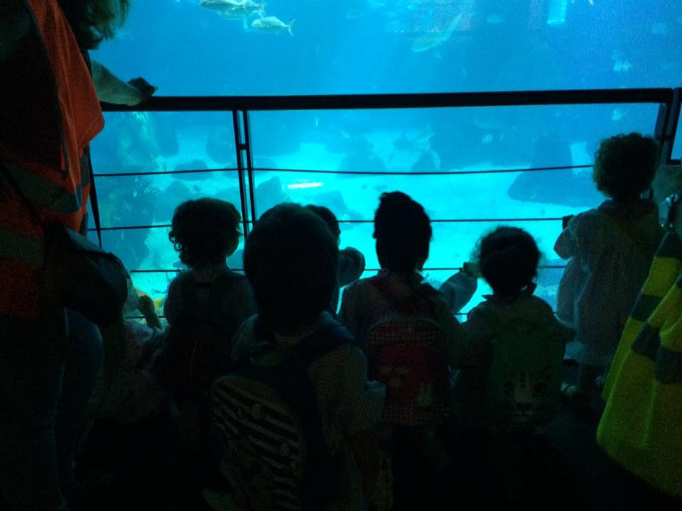
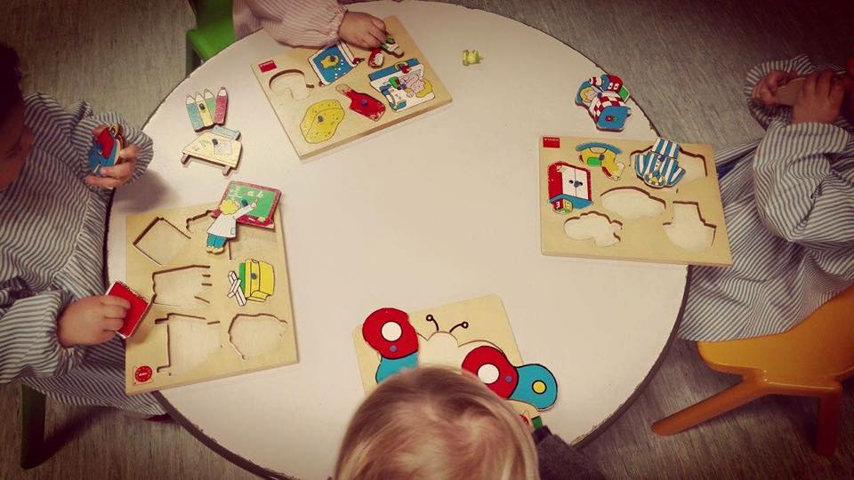
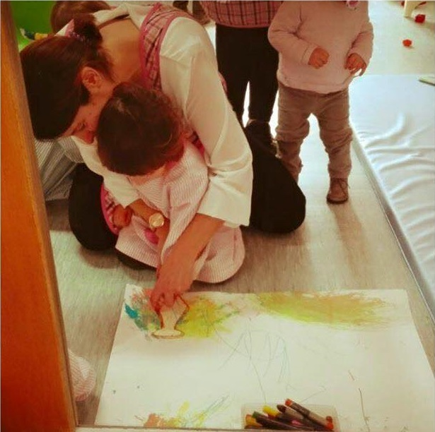

|
|
|
|
|
A Creche do Centro Social e Paroquial de São Mamede criada no ano de 2004 tem como objectivo dar resposta sobretudo às crianças da freguesia com idades compreendidas entre os 4 meses e os 3 anos e proporcionar a estas crianças um ambiente calmo e afectuoso, orientado pelos princípios do Evangelho que inspiram e guiam a actividade do Centro.
Tem como objetivos:
Corresponder às necessidades básicas e individuais de cada criança, respeitando a sua individualidade, o seu ritmo e o seu crescimento. Ter conhecimento da sua história de vida familiar de forma a permitir a criação de uma forte relação afectiva e também poder dar resposta às suas necessidades.
Valorizar o papel da família em todo o processo de adaptação e durante o desenrolar do ano lectivo dando continuidade ao ambiente vivido em casa. Envolver os pais na vida da creche transmitido segurança e confiança para ambos, pais e crianças.
Corresponder ás necessidades do grupo de crianças aproveitando cada momento e rotina do dia, com o objectivo de tornar cada situação um momento de qualidade com o intuito de intensificar a relação entre adultos e crianças.
Desenvolver as diversas áreas de conteúdo que se apresentam como referências gerais a considerar no planeamento e avaliação de situações e oportunidades de aprendizagem, tal como:
- Área de Formação pessoal e social;
- Área de expressão/comunicação que compreende os domínios da linguagem e abordagem à escrita, domínio da matemática e das expressão dramática, musical, motora e plástica
- Área de conhecimento do mundo;
|  |  |  |